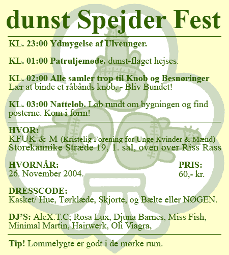

| dunst Spejder Fest | 26. November 2004 |
 |
|
| Det øsregnede imens vi holdt vores spejder fest.
Aligevel kom der 200 gæster. 80% overholdt dresscoden og det er vi
meget impornerede af. De andre 20% fik meget håre smæk i numsen. Hairwerk sang en sang imens han tog brusebad i 2 sække visne blade som var gemt fra efteråret. Johnny Warehouse sang Money Makes Me Happy. Hans kostume var en sovepose og en lommelygte. Puta sang en ny sang Sikringerne sprang Ca kl. 02 gik strømmen og alle gæster stod i mørke og i stilhed. Det gamle hus kunne ikke klare at trække alle vore scene lamper og lydanlægget var kæmpe stort. men så prøvede Minimal Martin i mørket at stikke ledningen ind i et stik i den anden ende af lokalet og så virkede det hele igen :-) Puta (Puha) sked en stor lort i vindugskarmen som han stolt viste frem til de nærmeste, hvorefter han med to stykker papir lyftede den og smed den ud af vinduet så den landede ude foran hoved indgangen til Restaurant RIS RAS. Dennis Agerblad tørrede vinduskarmen ren. Puta var for underlig. Puta pissede. Senere på aftenen stod puta oppe på scenen og pissede en lang stråle tis ud på dansegulvet. Gæsterne sørgede for at fordele tisset med deres sko rundt i alle lokalerne på gulve og gulvtæpper. Antoni kastede op. Han blev så fuld at kan kastede op i en fin reol inde på KFUM & K's dagmarstuer. Han gjorde alt for ikke at ramme gulvteppet med Puta's tis i. To bøsser bollede på bagtrappen. De viste ikke at KFUK også er et kollegie. Med små kristne piger. Madpakker KL. 04:00 kom der 10 poser med rugbrød, leverposteg, spegepølse, Agurker og en masse knive og så smurte folk selv en klap-sammen. Alt blev spist. Festen sluttede kl. 06:00 |
|